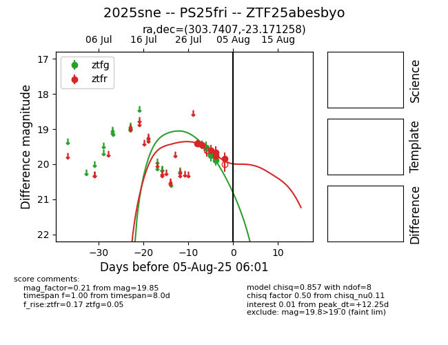

Target 2025sne at 2025-08-06 17:27, see:
FINK: fink-portal.org/2025sne
Lasair: lasair-ztf.lsst.ac.uk/objects/2025sne
ALeRCE: alerce.online/object/2025sne
TNS: wis-tns.org/object/2025sne
YSE: ziggy.ucolick.org/yse/transient_detail/2025sne
alt names
ZTF25abesbyo (ztf,fink)
2025sne (tns,yse)
PS25fri (panstarrs)
coordinates:
equatorial (ra, dec) = (303.7407,-23.17126)
galactic (l, b) = (19.7755,-28.10259)
photometry
last ztfg=19.88, ztfr=19.85
4 ztfg, 7 ztfr detections
